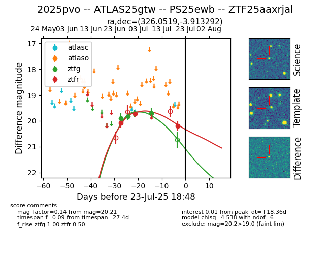

Target ZTF25aaxrjal at 2025-07-23 18:48, see:
FINK: fink-portal.org/ZTF25aaxrjal
Lasair: lasair-ztf.lsst.ac.uk/objects/ZTF25aaxrjal
ALeRCE: alerce.online/object/ZTF25aaxrjal
TNS: wis-tns.org/object/2025pvo
YSE: ziggy.ucolick.org/yse/transient_detail/2025pvo
alt names
ZTF25aaxrjal (ztf,fink)
2025pvo (tns,yse)
ATLAS25gtw (atlas)
PS25ewb (panstarrs)
coordinates:
equatorial (ra, dec) = (326.0519,-3.91329)
galactic (l, b) = (51.9448,-39.70631)
photometry
last ztfg=19.70, ztfr=20.21
4 ztfg, 3 ztfr detections
